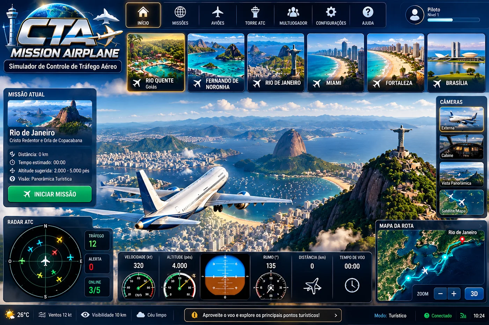

00:00✓ 0 incidentesVitória: rota limpa + melhor tempo
Rota pronta para exploração
◉ RADAR CTA1 / 5
● Você● Tráfego◇ Objetivo
MISSÃO EM CURSO0/3
Rio Quente — GO
Sobrevoe os destinos com segurança.
⭐ 0 pontos-- m do próximo ponto
🏆 CLASSIFICAÇÃO
Aguardando resultados...
DIREÇÃO
ALTITUDE
VELOCIDADE
Radar monitorando o espaço aéreoNenhuma aeronave identificada
EDIÇÃO 3.6 • DESAFIOS METEOROLÓGICOS • RANKING
Sua missão começa no céu.
Planeje rotas panorâmicas, acompanhe o radar e mantenha distância segura entre as aeronaves. Seis destinos brasileiros e internacionais, três pontos por missão, eventos meteorológicos e disputa por menor tempo sem incidentes para até cinco pilotos online.
✦ Seis cenários turísticos✦ Mapa interno sem internet✦ Corrida por tempo • até 5 online
ESCOLHA SUA AVENTURA
Ver arte-conceito que inspira esta versão

Imagem promocional ilustrativa. Os comandos reais são os botões do aplicativo; condições meteorológicas e instrumentos na arte não são dados ao vivo.
Preparar decolagem
Para jogar online, abra a aplicação pelo servidor incluído no pacote.
Aceite eletrônico local nesta versão; não é assinatura avançada/verificada. Para menores, participação conforme orientação e autorização de responsáveis.
LABORATÓRIO INTERATIVO · OFFLINE
📐 Matemática do Voo
Descubra a trigonometria que explica o movimento do avião.
1. Seno e cosseno: para onde vou?
O rumo é o ângulo medido a partir do norte, no sentido horário. O cosseno mostra a parte do movimento para o norte; o seno, para o leste.
Sen(θ)Velocidade leste = V × sen(θ)
Cos(θ)Velocidade norte = V × cos(θ)
NO SEU AVIÃO AGORARumo 45° · 138 ktLeste: 98 kt · Norte: 98 kt
Exemplo: a 90° o avião aponta para leste: sen(90°) = 1 e cos(90°) = 0. Valores negativos representam oeste ou sul.
2. Tangente: quanto subo ou desço?
A tangente relaciona a mudança de altura à distância percorrida horizontalmente. É uma maneira simples de entender a inclinação de uma trajetória.
Tan(θ)Variação de altura = 1.000 × tan(θ)
EXEMPLO DE TRAJETÓRIA3° → 52 m de altura em 1.000 mSeu avião: altitude 280 m
O triângulo é ampliado para facilitar a leitura. O exemplo usa uma trajetória idealizada e não substitui procedimentos reais de aproximação.
3. Curvas: por que o avião inclina?
Numa curva coordenada idealizada, o avião inclina as asas. A tangente do ângulo de inclinação ajuda a relacionar a velocidade ao raio da curva.
Raio da curvaR = v² ÷ (g × tan(φ))
EXEMPLO IDEALIZADORaio estimado: —Seu avião: 0° de inclinação visual
Quanto mais inclinado, menor tende a ser o raio na mesma velocidade. O movimento do jogo é simplificado, portanto o raio teórico não controla a simulação.
🎯 TESTE SEU RACIOCÍNIO1 pergunta por lição
Responda ao desafio!
Escolha uma resposta.
Conteúdo didático ilustrativo. Velocidade em nós (kt), altura em metros (m); não utilizar para navegação, pouso ou pilotagem reais.